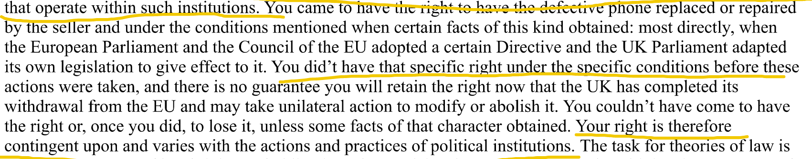

🗓️ Week 05
Ronald Dworkin: Integrity in the Law (Interpretivism)
PHIL284: from Law’s Empire pages 225-275
02 Sep 2026
Additional Interpretivist Views
The Orthodox View
Hart, H.L.A 1994, The Concept of Law, 2nd edition, Oxford: Clarendon Press.
Raz, Joseph, 1994, Ethics in the Public Domain, Oxford: Clarendon Press.
Mechanism of Institutional Action
- Existence and content of legal rights and obligations solely grounded in institutional history.
- Rights and obligations are artifacts of institutional action
- Institutions are authoritative: use communication to create, modify, or extinguish legal right or obligation, convey norms.
- Passing statutes
- Adopting regulations
Hybrid Interpretivism
- Institutionally valid norms:
- Norms determined by what institutions have said.
- Interpretation is a moral processing of these norms.
Interpretation means:
assess[ing] norms constituted by institutional communication and adjust the set in order to make it more attractive in some way . . .1
Therefore,
- Institutional input to the interpretive process . . . does not alone yield the final, complete set of legally valid norms.1
Variants
- Law consists of both rules and principles
- Principled Consistency (Dworkin’s Integrity): What principles justify which norms?
Principled Consistency (Dworkin’s Integrity): What principles justify which norms?a
What is the set of institutionally valid norms?
- Which norms?
- Which principles?
- What makes a norm or principle count as valid?
Fundamental or constitutive explanation of legal rights and obligations.
- Backward looking reports of conventionalism
- Forward looking legal pragmatism
- Instead, legal claims are interpretive judgments.
- Combines conventionalism and pragmatism
Integrity and Interpretation
- Conventionalism: judges study law reports and parliamentary records to discover what decisions have been made by which institutions conventionally recognized to have legislative power.
- Pragmatism: requires judges to think instrumentally about best rules for the future.
- Interpretation: asking judges to carry out interpretive studies of legal doctrine.
Problems
- Conventionalism: Leaves judge with no further guide for interpreting legal record.
- Pragmatism: reaches beyond legal material.
Interpretivism
Recognizes that rights and obligations vary with institutional and nonmoral social facts . . .
it is both the product of and the inspiration for comprehensive interpretation of legal practice. . . . law as integrity asks [judges] to continue interpreting the same material that it claims to have successfully interpreted itself. [226]
Facts:
- institutional practice:
- actions or practices of political institutions
- actions and psychology of agents that operate in such institutions
Rights:
- rights then vary with and are contingent on actions and practices of political institutions
- theories of law then should offer an account of legal rights and obligations that explain this relation

- Interpretation means explanation of rights and obligations
- grounded in moral principles and institutional practice
- Identifies moral principles which justify the enactment
- Justifying role of principles is fundamental
Justification
- Principles / moral facts give reasons why institutional practice or some other nonmoral consideration bear on legal rights and obligations
- Provide explanation why legally relevant
- Principles determine how consideration of institutional practice bears on legal rights and obligations
- Justifying role of principles is fundamental
- Therefore, rights and obligations have genuine moral force
E.g.,
- Principles of fairness or procedural justice determine rights and obligations.
- Such a role depends on precise reasons why enactments should have it.
- Sometimes the above may be determined by
- Linguistic intentions.
- Other intentions, e.g., shape of the law
Dimensions of Interpretation
- Fit: Interpretation must flow throughout the text
- Selectiveness: judges which readings improve the work of the law
- Special cases:
- Fair notice essential to permissibility of criminal punishment.
- Criminal statutes affect law only as narrowly construed.

PHIL284A – Integrity in the Law